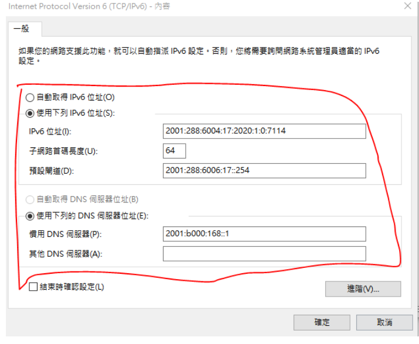
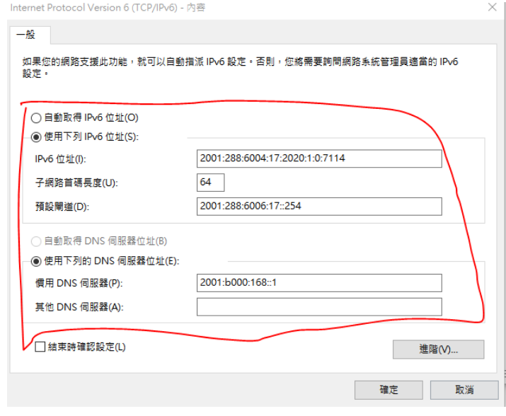
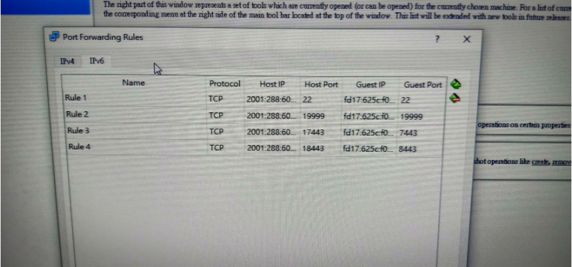
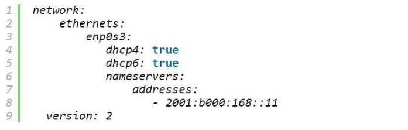
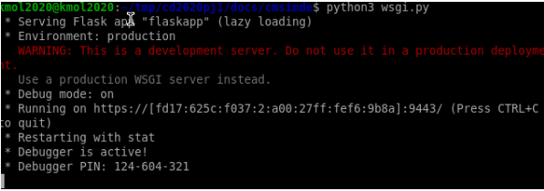
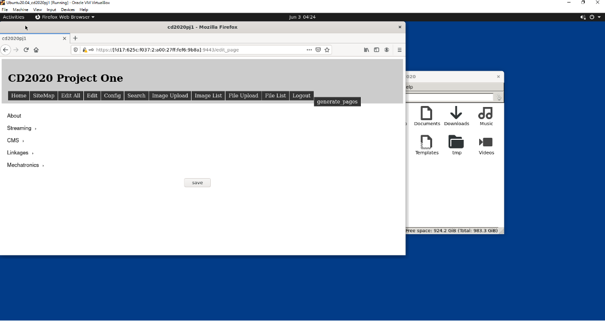

從Linux系統啟動Cline端,由windows系統下進入(IPV4) <<
Previous IPV6環境下,啟動自己對應的Host IP
1.先去網路介面卡設定自己對應的IP
 

2.在自己的Net裡面設定IPV6所對應的IP

3.進去cd /etc/apt/apt.conf.d,設定Proxy
輸入sudo vi Proxy.conf
點選i,進行編輯設定

輸入Acquire::http::Proxy "http://[2001:288:6004:17::69]:3128";
按Esc,再輸入:wq儲存退出
4.再來去cd /etc/netplan,設定DNS的addresses
輸入sudo vi 00-installer-config.yaml,進行設定

5.接下來去cd tmp/cd2020pj1/cd docs/cd cmsimde,更改wsgi.py的Host IP
輸入sudo vi wsgi.py進行設定
設定IPV6下所對應的Host IP

6.設定完再來利用Python3 wsgi.py,啟動近端,檢查是否正常

7.在虛擬主機內啟動近端
輸入https://[fd17:625c:f037:2:a00:27ff:fef6:9b8a]:9443/

8.在windows下啟動近端,即可完成啟動自己所對應的Host IP
輸入https://[2001:288:6004:17:2020:1:0:7114]:19443/

操作影片
從Linux系統啟動Cline端,由windows系統下進入(IPV4) <<
Previous